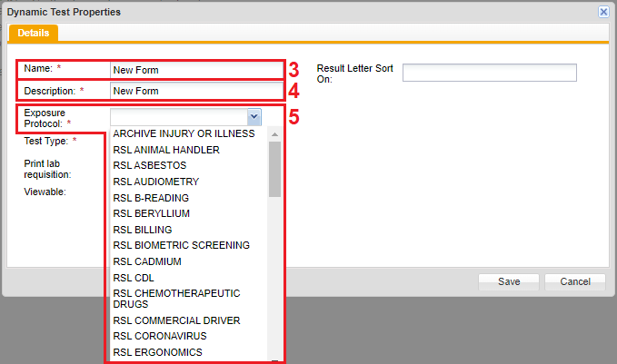

On the horizontal menu at the top, click the Form Config tab.
On the left navigation panel, click + Create New Charting Form.
The Dynamic Test Properties window opens.

Fill in Name textbox. This will be the title of the form.
Fill in the Description textbox.
Usually this is the same as what is filled in the Name textbox. This description is what shows up and displays when ordering the test in Order Test.
Click the Exposure Protocol dropdown textbox and select the closest Exposure Protocol that fits your form.
Click the Test Type dropdown textbox to select whether you want to add this form to an event manager.
If they are having an event program (ReviewVacc- Display in Event) or not (Review – Do not display in event). By choosing to display in event, the form will show in the events tab.
Viewable has three options to select Employee, Record Summary, and Compliance:
Employee – By selecting this option, the form information is viewable by the Employee
Record Summary – By selecting this option, the form information is recorded, this should be unchecked if you do not want personal information to be printed out.
Compliance – is to tie the form to a compliance program.
Click Save.
The Dynamic Test Properties window closes.
To confirm that the newly created charting form was created, look for the form in the Tests Window (left navigational panel) on the Client Config page.